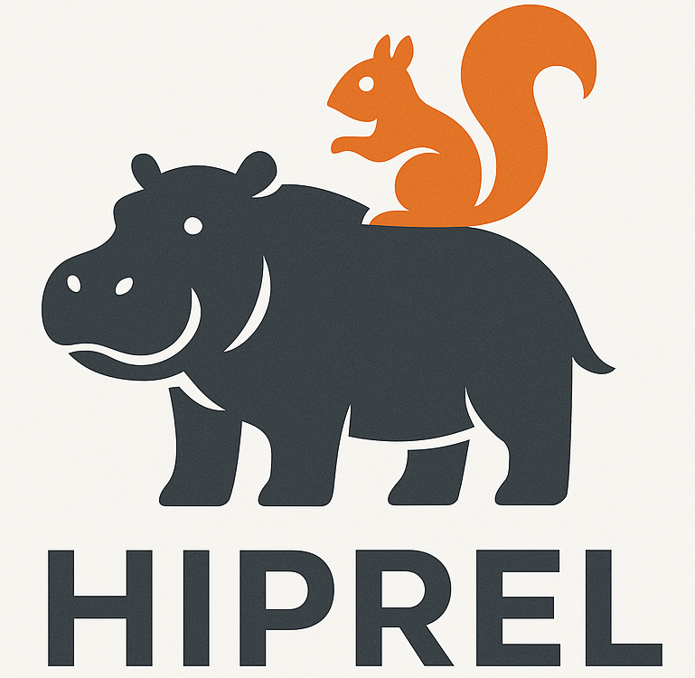

Hiprel GroupInterested in joining us? We're hiring!
Research Directions and Objectives
Beyond fundamental research, we develop specialized Neuro-Symbolic AI methods for reliable software, focusing on enhancing the reliability and robustness of systems ranging from large-scale cloud infrastructures to modern AI applications (which themselves can be viewed as complex software systems). We also explore verifiable code generation to make software development more trustworthy, transparent, and error-resistant.
Current Group Members
Faculty

PhD Students
Zichen Xie (Summer 2025 - )
Research: Neuro-Symbolic AI for Verifiable Code Generation; Improving the Reasoning and Verification Capabilities of LLMs
Master Students
Undergraduate Students
Internship Students
Alumni
Mrigank Pawagi (Spring 2025 - Summer 2026)
Research: LLMs for Detecting Bugs in Model Specifications and Internet Protocol Specifications
Role: Research Intern
Next Position: PhD at UPenn
Aaditi Rai (Fall 2025)
Research: VeriContest Benchmark Generation
Role: Undergraduate
Tianyi Huang (Fall 2024 - Spring 2025)
Research: LLMs and Deep Learning for SAT Solving
Role: Research Intern
Next Position: PhD at NUS
Chaitanya Rajendra Shahane (Fall 2024 - Fall 2025)
Research: LLMs for Software Testing, Software Testing for Deep Learning Libraries
Role: Master
Next Position: AI Engineer at RootLogic Systems
Publications from Our Group
-
Chaitanya Shahane, Derek Hansen, Wenxi Wang, Pengyu Nie
Differential Inline Testing: Framework, Test Generation, and Application
The 36th IEEE International Conference on Collaborative Advances in Software and Computing (CASCON 2026) (to appear)
-
Arjun Tandon, Mehmet Fırat Dündar, Milkiyas Gebremichael Gebru, Darko Marinov, Yiling Lou, Wenxi Wang
Re-evaluating Detection of Equivalent Mutants Using LLMs: We Should Properly Measure How Far We Are
The 35th ACM SIGSOFT International Symposium on Software Testing and Analysis (ISSTA 2026)
PDF -
Zichen Xie, Wenxi Wang
Can LLMs Reason Like Automated Theorem Provers for Rust Verification? VCoT-Bench: Evaluating via Verification Chain of Thought
The forty-third International Conference on Machine Learning (ICML 2026)
PDF -
Mrigank Pawagi, Lize Shao, Hyeonmin Lee, Yixin Sun, Wenxi Wang
RFCScope: Detecting Logical Ambiguities in Internet Protocol Specifications
The 40th IEEE/ACM International Conference on Automated Software Engineering (ASE 2025)
PDF Slides Poster